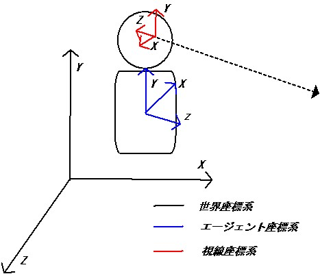
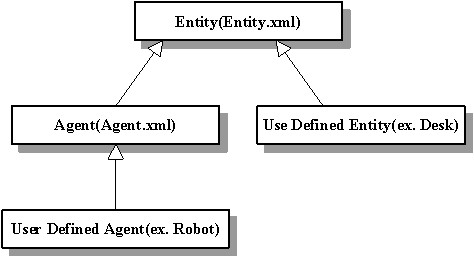

ここではシミュレーションサーバで構成する仮想世界を記述する世界ファイ ルを作成するにあたり、必要な項目を解説します。
本システムでは以下の3つの座標系を使用しています。
エージェント・エンティティの位置などを表わす座標系です。鉛直上向きが +Y方向になっています。
エージェントやエンティティの部位の位置を表す座標系です。エージェントまたはエンティティの中心を原点とし、エージェントは+Z方向に直 面し、+Y方向が上で、+Xがエージェントの左となっています。
エージェントの視点からみた物体の座標位置を表します。エージェントの視点を原点とし、エージェントの正面を-Z方向、右を+X方向、 上を+Y方向とします。
「エージェント」、「エンティティ」をそれぞれ以下のように定義します。
自律動作する物体
エージェント以外の、静的な(自律動作しない)物体
仮想世界内に登場させる物体については、XMLファイルにより定義を行います。 ユーザが新たな性質を持った物体を仮想世界内に登場させる場合には、それに応 じたクラスをXML形式で定義する必要があります。
Entityクラス、Agentクラスに ついてはそれぞれ定義がなされています(Entity.xml, Agent.xml)。これらのファイルは変更しないで下さい。
Agentクラスは自律動作を行う・感覚機能を持っていることを除けば、Entity クラスと同じ性質を持っています。そのため、AgentクラスはEntityクラスを継 承しています。
Entity クラスは仮想世界内に存在する物体の基底クラスです。すべてのクラ スは、直接的・間接的にEntityクラスを継承する必要があります。新たに自律動 作するクラスを作成する場合はAgentクラスを、静的なクラスを作成する場合は Entityクラスを継承してください。
エージェント・エンティティの形状は形状ファイルによって記述し、クラス定義の際に形状ファイルを指定します
エージェントまたはエンティティの形状は、形状はX3DファイルまたはHAnimeの構造をベースにした独自XML形式のファイ ルで指定します。
クラス定義時に、使用する形状ファイルを指定します。以下の例は、Robotクラスです。robot-body.xmlという形状ファイルをRobotクラスで使用するよう指定します。
<?xml version="1.0" encoding="utf8"?> <define-class name="Robot" inherit="Agent.xml"> <x3d> <filename>robot.x3d</filename> </x3d> </define-class>
<?xml version="1.0" encoding="utf8"?> <define-class name="Robot" inherit="Agent.xml"> <body filename="robot-body.xml"/> </define-class>
X3D形状ファイルで以下の項目を設定します。
コントローラで関節の角度を指定可能になります。回転軸は jointタグ内のjointAxisタグで指定します。
<?xml version="1.0" encoding="UTF-8"?> <X3D profile="Immersive" version="3.0"> ... <ProtoInstance name='Joint' DEF="WAIST_JOINT1" containerField='children'> <fieldValue name='name' value='WAIST_JOINT1' /> <fieldValue name='translation' value='15.0 0.0 0.0' /> <fieldValue name='jointType' value='rotate' /> <!-- WAIST_JOINT1 の回転軸は(1.0, 0.0, 0.0)。jointTypeが"rotate"の場合有効 --> <fieldValue name='jointAxis' value='1.0 0.0 0.0' /> <fieldValue name='jointId' value='26.0' /> ...; </ProtoInstance>
物理シミュレーションの際、衝突判定等に使われる形状のことをSIGVerseでは「単純形状」と呼びます． これは画面表示に使われる複雑な形状ではなく、直方体、球といった極めて単純な形をしています．
SIGVerseでは、表示用形状(X3Dファイル)から自動的に単純形状を算出し、物理シミュレーションに使いますが、この単純形状を明示的に定義することもできます．
記述には2つの方法があります．
(1)は、エンティティ定義ファイル内で直接単純形状を記述する方法です．
(2)は、あらかじめ別ファイルで定義した単純形状記述を、エンティティ定義ファイル内から間接参照する方法です．
エンティティ定義ファイル内に上記(1), (2)の記述がない場合は、単純形状は自動計算されます．
以下に例を示します．
(1) <simpleShape>タグによる直接定義
===(例1)=======================================================------------------------------------------------------------- <?xml version="1.0" encoding="utf8"?> <define-class name="Apple" inherit="Entity.xml"> <!-- derived class from Entity.xml ALWAYS NEEDS body tag --> <!-- (otherwise simserver.sh crashes) --> <body filename="dummy-body-orig.xml"/> <simpleShape type="sphere"> <position x="0" y="0" z="0"/> <size r="3"/> </simpleShape> <x3d> <filename>apple.wrl</filename> </x3d> </define-class> -------------------------------------------------------------===============================================================
単純形状として使えるものには以下の3種類があります．
[円筒による定義の例]
円筒の場合、rで底面の円の半径を、hで円筒の高さを記述します．
<simpleShape type="cylinder"> <position x="0" y="0" z="0"/> <size r="3" h="10"/> </simpleShape>
[直方体による定義の例]
直方体の場合、sx, sy, szで直方体の辺の長さを記述します．
<simpleShape type="box"> <position x="0" y="0" z="0"/> <size sx="2" sy="5" sz="3"/> </simpleShape>
(2) <simpleShapeFile>および<simpleShapeDesc>タグによる間接定義
<simpleShapeFile>タグにより、単純形状定義のみ記述された他のファイルを参照することができます． 参照されたファイル内では<simpleShapeDesc>タグにより単純形状を定義します．
===(例2)=======================================================------------------------------------------------------------- <?xml version="1.0" encoding="utf8"?> <define-class name="Apple" inherit="Entity.xml"> <!-- derived class from Entity.xml ALWAYS NEEDS body tag --> <!-- (otherwise simserver.sh crashes) --> <body filename="dummy-body-orig.xml"/> <simpleShapeFile>ssApple.xml</simpleShapeFile> <x3d> <filename>apple.wrl</filename> </x3d> </define-class> -------------------------------------------------------------
------------------------------------------------------------- <?xml version="1.0" encoding="UTF-8" standalone="no" ?> <simpleShapeDesc> <parts name="body" type="sphere"> <position x="0" y="0" z="0"/> <size r="2"/> </parts> </simpleShapeDesc> -------------------------------------------------------------===============================================================
この例では、エンティティ定義ファイル(seApple.xml)の中で、単純形状定義ファイル(ssApple.xml)を参照しています．
単純形状定義ファイルでは、simpleShapeDescタグを用いて単純形状を定義します． 記述方法はsimpleShapeタグとほとんど同じですが、name属性により単純形状を適用するパーツ名を指定できます．これはヒューマノイド形状のように、パーツが複数がある場合に対応するための機能です． simpleShapeタグの場合は、パーツ名の指定はできません（自動的に"body"になります）
次の例は、パーツごとに単純形状を指定するものです.パーツ名（例えばWAIST_LINK0など）ごとに個別の単純形状を指定しています．
===(例3)=======================================================------------------------------------------------------------- <?xml version="1.0" encoding="utf8"?> <define-class name="Robot" inherit="Agent.xml"> <set-attr-value name="scalex" value="0.7"/> <set-attr-value name="scaley" value="0.7"/> <set-attr-value name="scalez" value="0.7"/> <simpleShapeFile>ssRobot-nii.xml</simpleShapeFile> <x3d> <filename>nii_robot.x3d</filename> </x3d> </define-class> -------------------------------------------------------------[ssRobot-nii.xml]
------------------------------------------------------------- <?xml version="1.0" encoding="UTF-8" standalone="no" ?> <simpleShapeDesc> <parts name="WAIST_LINK0" type="box"> <position x="0" y="-1" z="0"/> <size sx="30" sy="13" sz="22"/> </parts> <parts name="WAIST_LINK1" type="box"> <position x="0" y="12" z="1"/> <size sx="25" sy="23" sz="20"/> </parts> <parts name="WAIST_LINK2" type="box"> <position x="0" y="0" z="0"/> <size sx="0.05" sy="0.4" sz="0.05"/> </parts> <parts name="WAIST_LINK3" type="box"> <position x="0" y="3.5" z="-1"/> <size sx="50" sy="35" sz="25"/> </parts> .... </simpleShapeDesc> -------------------------------------------------------------===============================================================
なお、SIGVerseでは、エンティティの持つ状態値に応じて、 表示される形状を切り替えることができますが、 単純形状に関しては1つのエンティティにつきただ1つの単純形状となります （＝状態によって単純形状を切り替えることはできません）
以下のTVクラスは、2つの形状ファイル(TV_on.wrl, TV_off.wrl)を状態変数で変えられるように定義していますが、単純形状はただ1つとなっています．
===(例4)=======================================================<?xml version="1.0" encoding="UTF-8" standalone="no" ?> <define-class name="TV" inherit="Agent.xml"> <!--derived class from Entity.xml ALWAYS NEEDS body tag--> <!--(otherwise sigserver.sh crashes)--> <body filename="dummy-body.xml"/> <attr group="visState" name="switch" type="string" value="on"/> <simpleShape type="box"> <position x="0" y="0" z="0"/> <size sx="15" sy="10" sz="3"/> </simpleShape> <x3d> <filename>TV_on.wrl</filename> <state name="switch" value="on"/> </x3d> <x3d> <filename>TV_off.wrl</filename> <state name="switch" value="off"/> </x3d> </define-class>===============================================================
仮想世界の初期状態はXML 形式で記述します(世界ファイルサンプル) 。
worldタグ内に世界性質、登場させるエージェント・エンティティを記述します。name属性で世界に名前を付けることができます
x, y, z 方向の重力加速度をそれぞれ指定します。
worldタグ内でinstanciate タグを使用して、エージェントまたはエンティティを世界内に登場させます。その際に、set-attr-name タグを使用して名前(name), 初期位置(x, y, z)の各値を指定します。ODEによる物理シミュレーションによる外力を無効にするにはdynamicsをfalseにします
implementation属性にコントローラ ライブラリを指定することで、エージェントに対してコントローラを割 り当てることができます。language属 性値は、今のところc++のみ有効です
 （株）数理システム
（株）数理システム